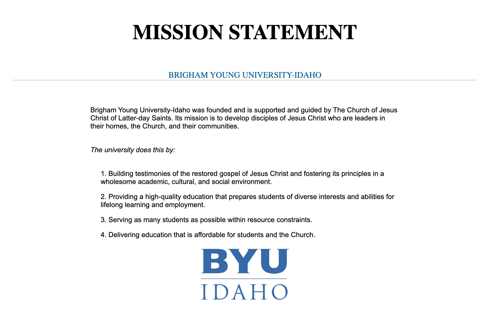
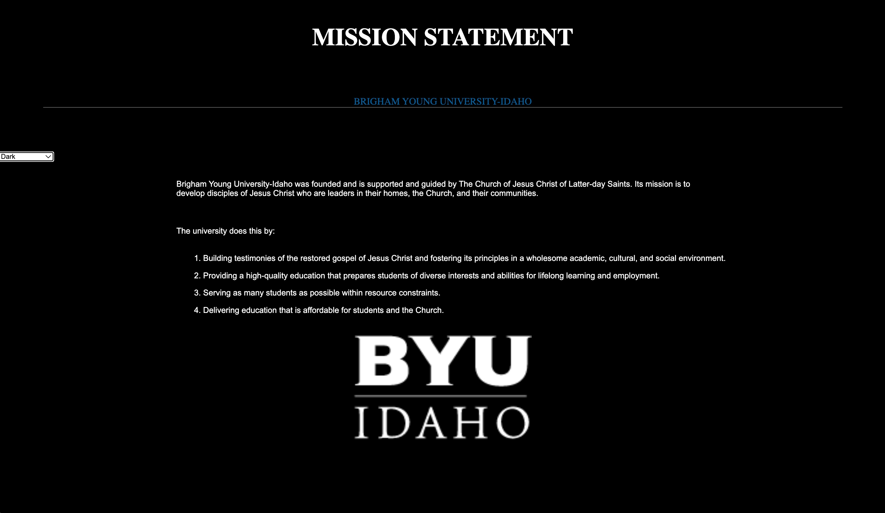
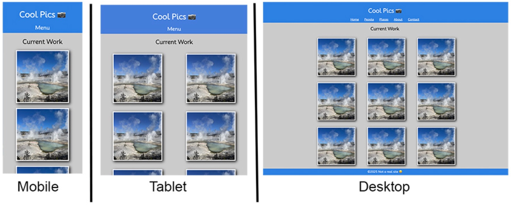
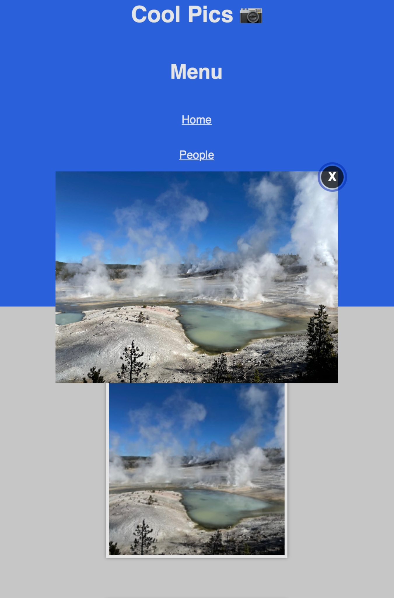

Prove Projects
These are the "Prove" projects completed throughout the Dynamic Web Fundamental (WDD131) course at Brigham Young University Idaho (BYUI). They are listed in order with the first being at the top left and most recnet toward the bottom right.
University Mission Statment
This project is to put MetaTags and CSS Review together for practice without a video guide. Only an example picture is given to duplicate a final Mission Statement from BYUI.
Download Referace Image{kind=link}
DOM Basics
Contiue with University Mission Statement project and add light dark mode with a drop down menu using Java Script.
Download Referace VideoCool Pics Part 1
Replicate a moblie, tablet, and desktop version of a cool pics website using responsive design techniques from a referace photo.
Download Referace Photo{kind=link}
Cool Pics Part 2
Continue working with the Coolpics page that was created. JavaScript will be added to allow a user to open and close the mobile menu.Also, when users click an image a modal will show. Allow the user to close the modal with the Esc key, clicking outside the modal image, and by clicking the close 'X' button.
Download Referace Photo{kind=link}
Build a Blog Part 2

Use object array in your JS file to bring in each book article dynamically.
Download Referace Photo